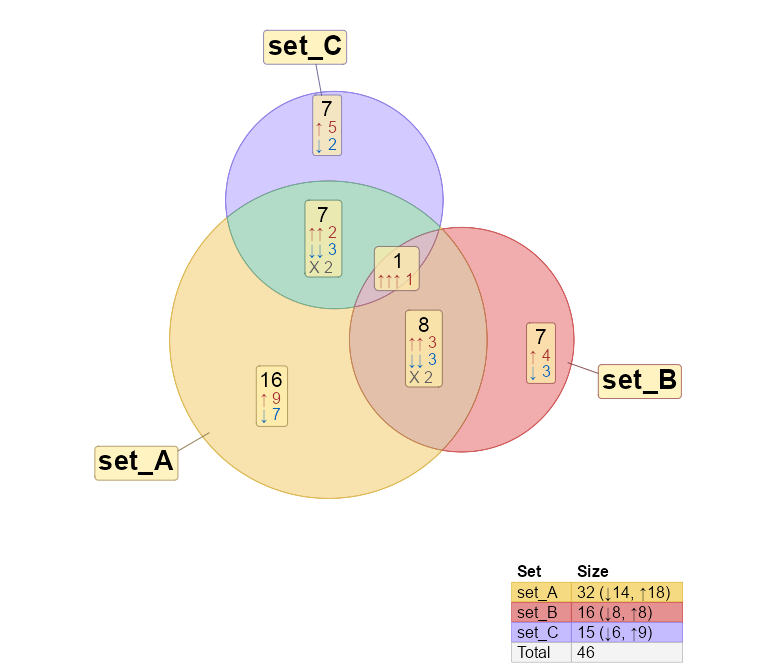
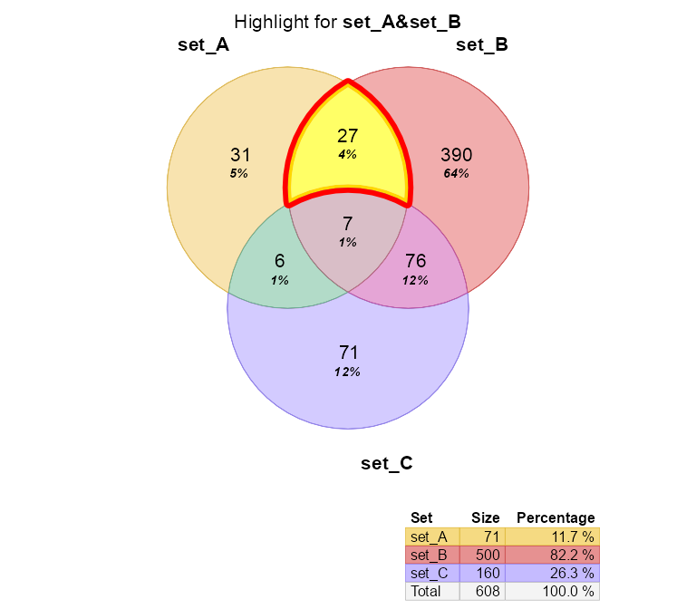
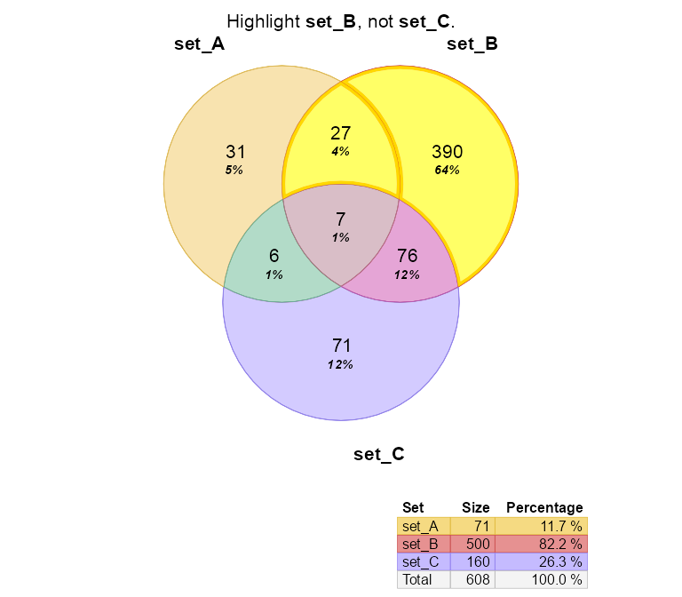
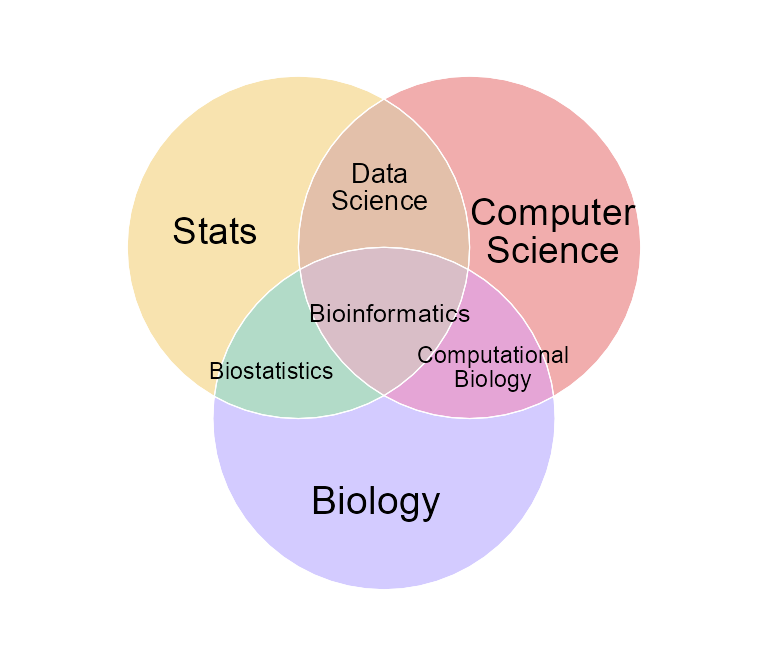
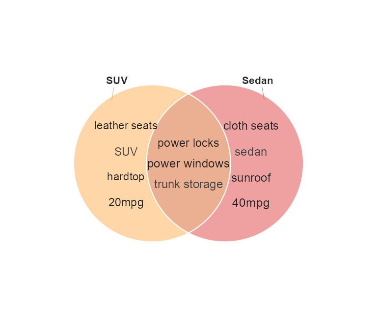

The venndir package provides Venn directional diagrams, that can optionally display item labels inside the overlap regions.
The pkgdown reference: jmw86069.github.io/venndir
Installation
The development version of venndir can be installed with:
# install.packages("remotes")
remotes::install_github("jmw86069/venndir");Why Venndir?
Biological data often involves components, for example genes, and the direction of change, for example increase or decrease. It is not enough to compare genes affected by two experiments, it is critical to compare the direction of change. How else can we discriminate the effects of disease from the effects of a cure?
library(venndir)
vo <- venndir(make_venn_test(100, 2, do_signed=TRUE),
proportional=TRUE,
overlap_type="each", font_cex=1.2)
Features of venndir
The core is venndir() which takes a setlist as input and produces a Venn diagram. When the setlist contains directionality (sign), the directional overlaps are also displayed.
To illustrate the point, make_venn_test() is used to create test setlist data.
setlist <- make_venn_test(100, 3)-
setlistis alistofcharactervectors. - The names of the list
names(setlist)are the set names. - Each vector contains items which are the subject of the Venn overlaps.
Now you can create a Venn diagram with venndir():
venndir(setlist)
You can make a proportional Venn diagram, known as a Euler diagram. Add argument proportional=TRUE.
vo <- venndir(setlist,
proportional=TRUE)
Venn Direction
The namesake of this package is Venn with directionality! VennDir
Use the testing function to create example data:make_venn_test(..., do_signed=TRUE)
The setlist is a list as before, except now the values are:
-
+1for up -
-1for down
Each vector is a named vector,
whose vector names are the items, and
whose vector values are the directions.
Take a look.
setlist_dir <- make_venn_test(100, 3, do_signed=TRUE)
setlist_dir
#> $set_A
#> item_067 item_042 item_050 item_043 item_014 item_025 item_090 item_091
#> -1 1 1 -1 -1 1 -1 -1
#> item_069 item_093 item_057 item_009 item_072 item_026 item_007 item_099
#> -1 1 1 -1 1 1 -1 -1
#> item_089 item_083 item_036 item_078 item_097 item_076 item_015 item_032
#> -1 1 1 1 1 1 -1 1
#> item_086 item_084 item_041 item_023 item_027 item_060 item_053 item_079
#> 1 1 -1 1 -1 1 1 -1
#>
#> $set_B
#> item_053 item_027 item_096 item_038 item_089 item_034 item_093 item_069
#> 1 -1 1 -1 -1 -1 1 -1
#> item_072 item_076 item_063 item_013 item_082 item_025 item_097 item_021
#> 1 1 1 1 1 -1 -1 -1
#>
#> $set_C
#> item_079 item_041 item_047 item_090 item_060 item_095 item_016 item_006
#> -1 -1 1 -1 1 1 1 -1
#> item_072 item_086 item_091 item_039 item_031 item_081 item_050
#> 1 1 1 1 -1 1 -1For biological data, direction is important, and relevant. Up- or down-regulation might be the difference between disease and treatment.
Aside:
make_venn_tests()can simulate concordance.
Concordance measures how frequently two directions are the same. Kruskal’s Concordance is defined:(agree - disagree) / (n).
Thus,concordance=0means there are the same number that agree as disagree in direction, andconcordance=1means every element agrees in direction.
There are different ways to visualize directionality:
-
overlap_type="concordance"- (default for signed input): Concordant upR cat("\u2191"), downR cat("\u2193"), and discordant X. -
overlap_type="overlap"- (default for non-signed input): Show overlap counts only. -
overlap_type="agreement"- Show only Agreement (up/up and down/down), and Disagreement (up/down and down/up). -
overlap_type="each"- Show all combination of up and down directions.
overlap_type=“concordance”

This approach is effective at conveying direction, without too many details.


Euler Direction
Add argument proportional=TRUE to display a proportional Venn diagram (Euler diagram), which uses the excellent eulerr R package.

Labeling is a challenge with proportional Venn diagrams, venndir has several options to help optimize, and customize label placement. (Bookdown docs forthcoming.)
For very small overlap regions, inside_percent_threshold=5 will move labels outside when the area is less than 5% of the total.
venndir(setlist_dir,
proportional=TRUE,
label_style="lite box",
inside_percent_threshold=5,
font_cex=c(1.3, 1))
The signed labels are arranged in “wide” format, but “tall” may be more visually appealing.
venndir(setlist_dir,
proportional=TRUE,
template="tall",
label_style="lite box",
font_cex=c(1.3, 1))
Customizing the Venn diagram
Labels can be customized with shading, border, and placed inside or outside the Venn area.
Label styles
The argument label_style can be used to customize the label:
-
label_style="lite"- adds lite shading behind each label -
label_style="shaded"- adds partially transparent shading -
label_style="fill"- adds solid colored shading -
label_style="box"- adds a small outline box around the label
Multiple terms can be combined, for example to add shading and a box:
-
label_style="shaded box"- adds colored shading and a box outline
Label position
Argument show_labels is used to position labels. Each letter defines a type of label, and UPPERCASE or lowercase indicates where to place the label.
- UPPERCASE = outside the Venn diagram
- lowercase = inside the Venn diagram
The letters:
- N = the set name
- C = the overlap count
- S = the signed overlap count(s)
- i = the overlapping items
Guidance:
- The default:
show_labels="Ncs"will show _N_ame outside, _c_ounts inside. When _s_igned labels are shown, they also appear inside. Signed labels are not shown whenoverlap_type="overlap". - Display all labels inside:
show_labels="ncs" - It works best to have the _c_ounts and _s_igned counts together, usually inside.
- To display items,
show_labels="Ni"is recommended, to show _N_ame outside, and _i_tems inside. You can still useshow_items="sign item"so that each item label will include the direction. - When displaying items, the counts and signed counts are automatically moved outside. (There isn’t a great way to place item labels around the count labels. Maybe in future.)
setlist <- make_venn_test(1000, 3)
vo4 <- venndir(setlist,
show_labels="ncs",
main="Set labels are placed inside.",
inside_percent_threshold=0)
Hide line segments with show_segments=FALSE
vo4l <- venndir(setlist,
show_labels="Ncs",
show_segments=FALSE,
main="Set labels are outside, with hidden line segments.",
inside_percent_threshold=0)
Highlights
Specific overlaps can be modified or highlighted, using either modify_venndir_overlap() or highlight_venndir_overlap(). Labels can be adjusted, moved, resized, etc.
vo4h <- highlight_venndir_overlap(vo4l,
outerborder="red", outerborder.lwd=3,
overlap_set="set_A&set_B")
render_venndir(vo4h, main="Highlight for **set_A&set_B**")
vo4h <- highlight_venndir_overlap(vo4l,
overlap_set=unique(grep("set_B", vo4l@jps@polygons$venn_name, value=TRUE)))
render_venndir(vo4h, main="All overlaps **set_B** and not **set_D**")
Text Venn for the R Console
Text Venn diagrams are surprisingly convenient for remote server work! (Output is colorized, not colorized in RMarkdown.)
The first example is the basic Venn overlap, without direction.
setlist <- make_venn_test(1000, 3, do_signed=TRUE)
names(setlist) <- gsub("set_", "", names(setlist));
textvenn(setlist, overlap_type="overlap", htmlOut=TRUE) A&B
27
A B
31 390
A&B&C
7
A&C B&C
6 76
C
71
But of course direction is helpful, so here it is with the default overlap_type="concordance" (below)
textvenn(setlist, overlap_type="concordance", htmlOut=TRUE) A&B ↑↑: 9
27 ↓↓: 12
A ↑: 19 X: 6 B ↑: 185
31 ↓: 12 390 ↓: 205
A&B&C ↑↑↑: 2
7 X: 5
A&C ↑↑: 2 B&C ↑↑: 39
6 ↓↓: 3 76 ↓↓: 21
X: 1 X: 16
C ↑: 30
71 ↓: 41
Use unicode=FALSE if the console font does not support unicode arrows.
textvenn(setlist, overlap_type="concordance", unicode=FALSE, htmlOut=TRUE) A&B ^^: 9
27 vv: 12
A ^: 19 X: 6 B ^: 185
31 v: 12 390 v: 205
A&B&C ^^^: 2
7 X: 5
A&C ^^: 2 B&C ^^: 39
6 vv: 3 76 vv: 21
X: 1 X: 16
C ^: 30
71 v: 41
Nudge Venn circles
Sometimes when making a proportional Euler diagram, the overlaps cannot all be displayed. Consider this example:
overlaps <- c(set_A=187, set_B=146, set_C=499,
`set_A&set_B`=1,
`set_A&set_C`=181,
`set_B&set_C`=219,
`set_A&set_B&set_C`=20);
# convert to setlist
setlist_o <- counts2setlist(overlaps)
vn <- venndir(setlist_o,
expand_fraction=0.15,
proportional=TRUE,
outerborder="white", outerborder.lwd=2, innerborder=NA,
font_cex=1.4,
set_colors=c("firebrick2", "dodgerblue", "#BBBBBB"))
The overlap set_A&set_B has 1 count, but is not displayed.
Use argument circle_nudge to move a specific Venn circle using x,y coordinates.
# define the nudge
circle_nudge <- list(
set_A=c(1, 0),
set_B=c(-1, 0))
# apply the nudge
vo_nudge <- venndir(setlist_o,
font_cex=1.4,
proportional=TRUE, inside_percent_threshold=2,
outerborder="white", outerborder.lwd=2, innerborder=NA,
circle_nudge=circle_nudge,
set_colors=c("firebrick2", "dodgerblue", "#BBBBBB"))
Item labels
When looking at a Venn diagram, a common very next question is
“What items are shared?”
Add "i" to the show_labels argument, for exampleshow_labels="Ni"
setlist <- make_venn_test(33, 3, do_signed=TRUE, item_prefix="item");
vo <- venndir(setlist,
item_cex=0.8,
show_labels="Ni")
You can show both the sign and the item name, or just one.
Argument show_items="sign" will display only the direction.
setlist <- make_venn_test(100, 3, do_signed=TRUE);
venndir(setlist,
fontfamily="Arial",
show_labels="Ni",
item_cex=1.5,
show_items="sign",
proportional=TRUE);
The sign is an interesting visual summary when there are too many labels to display otherwise.
setlist <- make_venn_test(850, 3, do_signed=TRUE);
venndir(setlist,
fontfamily="Arial",
show_labels="Ni",
show_items="sign",
item_cex=1.5,
item_buffer=0,
max_items=10000);
Venn Memes
More examples will be in the bookdown docs, and some fun ones are in venn_meme().
Here is a simple example:
bix <- list(
s="Stats",
cs="Computer<br>Science",
b="Biology",
`s&b`="Biostatistics",
`s&cs`="Data<br>Science",
`cs&b`="Computational<br>Biology",
`s&cs&b`="Bioinformatics")
venn_meme(bix,
outerborder.lwd=0,
innerborder="white")
You can provide a list of vectors, for example this fun example comparing two cars:
meme_list <- list(
`Car A`=c("leather seats", "no sunroof", "SUV", "20mpg"),
`Car B`=c("cloth seats", "sedan", "sunroof", "40mpg"),
`Car A&Car B`=c("power locks", "power windows", "trunk storage"))
venn_meme(meme_list,
font_cex=c(2, 1, 1),
outerborder.lwd=0, innerborder.lwd=0,
proportional=TRUE,
# outerborder="white", outerborder.lwd=1, innerborder=NA,
set_colors=c("orange", "firebrick3"),
# poly_alpha=0.9,
# item_buffer=-0.4,
show_labels="Ni",
show_segments=FALSE)